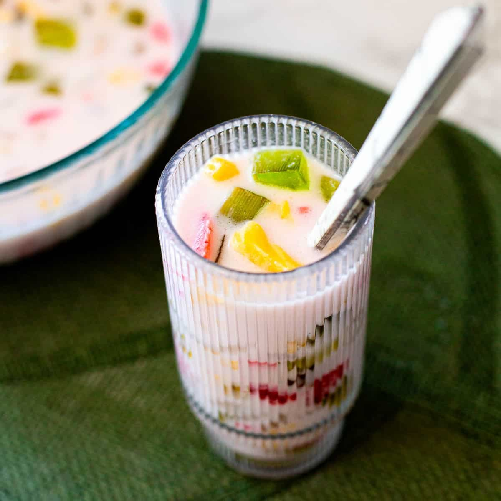
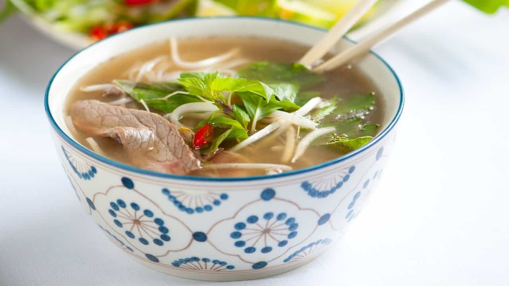

Top Rated Vietnamese Dishes You Have To Try!
Bánh Bao

Bánh Bao ball-shaped bun containing pork or chicken meat, onions, eggs, mushrooms and vegetables, in Vietnamese cuisine. It often has Chinese sausage and a portion of a hard-boiled egg inside. They are filled with savory fillings, the most common being seasoned ground pork and quail egg.
Bánh Khot

Bánh Khot, or Vietnamese savory mini pancakes, is made from a batter of rice flour, corn starch, turmeric powder, water and coconut milk. They are usually topped with shrimp, brushed with scallion oil, fried on a cast iron Banh Khot or Aebleskiver pan to crispy perfection on the outside yet fluffy on the inside.
Bánh Mí

Bánh Mí is a Vietnamese staple and short baguette with its thin, crisp crust and a soft, airy texture. It is often split lengthwise and filled with meat and savory ingredients like a submarine sandwich and served as a meal, called bánh mì thịt. Plain bánh mì is also eaten as a staple food.
Bánh Xéo

Bánh Xéo is a cripsy, stuffed rice pancake popular in Vietnam. The name refers to the sound of the crispy thin later made from rice batter after being poured into a skillet. It is made up of rice flour, water, and turmeric powder. It can also be refered to as a Vietnamese Crêpe with toppings on the inside such as shrimp.
Bột Chiên

This dish consists of fried thin flour cakes. Although this dish is very popular in Vietnamese culture, it has some influence from another Chinese based flour dish. The Vietnamese version consists of a special tangy soy sauce on the side, rice flour cubes with fried eggs (either duck or chicken), and some vegetables. This is a popular after-school snack for young students in southern regions of Vietnam.
Chè
Another favorite is Chè or Chè Thai. This dish is more unique as it can be made a number of different ways but always comes out delicious. It can be served as a beverage, soup or pudding and is dairy free containing, coconut milk, certain jellies, beans, tapioca, and fruit.
Cơm Tấm
This dish is one of my personal favorites as it incorporates many different simple ingredients but always turns out amazing. Served with rice, grilled meat, any style of eggs, cucumbers, lettuce and tomato, it is topped off with a special fish sauce for a sweet, spicy and tangy flavor.
Gỏi cuốn

Gỏi cuốn is a small platter of spring rolls that have a base of rice paper rolls wrapped around lettuce, bean sprouts, and either shrimp or pork. Alongside the rolls comes a special peanut sauce topped with peanut crumbs for a sweet and savory flavor.
Hủ tiếu

Hủ tiếu is a home style favorite for everyone! This dish can be served as a warm soup or cold and by itself. The dish is vegetarian, for the most part, but it is not uncommom to add proteins like shrimp or liver. The dish can also be served with rice or egg noodles.
Mí Xao Gion

This popular dish gets its name from the crispy fried noodles that is served with a bundle of seafood toppings. The noodles are egg based and toppings include shrimp, greens, and a chicken.
Phở
If anyone has heard of Vietnamese cuisine, they might know Phở! This is the national dish of Vietnam and can be made many different ways. Flavors of this dish mostly contain spices and herbs from the broth. Other parts of the dish can mix and match but the main ingredients include rice noodles, meatballs, steak or chicken, topped off with spearmint leaves, bean sprouts, and green onions.
Thịt kho trứng
Also known as braised pork and eggs, this is a very simple dish that requires very little to almost no maintainence to cook. Served with white rice, this dish consists of caramalized pork with boiled eggs that are then marinated in the broth alongside the pork. The dish is quite simple but never fails to impress!